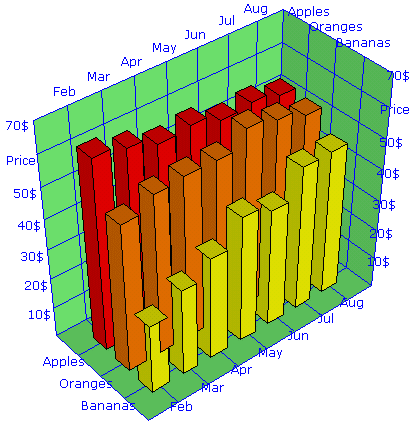
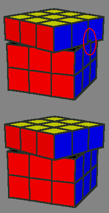

SVG-VML-3D - DOCUMENTATION
So you want to use the SVG-VML-3D library for your own projects and need some documentation? OK, here we go:
Take one of the example files and use it as template. The basic code that you will always need is the following:
//the function Init is called by the onload event handler of the html file
function Init()
{ //First you need the object Scene, this is the world which contains all other objects
//The object Scene holds all the information about light, position of the observer, and so on
if (useSVG)
{ //We must wait until the file scene.svg is completely loaded then SVGObjects[0] will be available
if (! SVGObjects[0]) //If you have more than one scene.svg embedded, then you can use SVGObjects[n] (n=0,1,...)
{ setTimeout("Init()",100); //If scene.svg is not loaded then try again in 0.1 seconds
return;
}
S=new Scene3D(SVGObjects[0],0,500,500); //use the same n for SVGObjects[n] here
}
else S=new Scene3D(document.getElementById("Scene1"),1);
//Now you can add the objects which you want to view to the scene and subsequently do some manipulations to
//resize the objects and to move them from the origin of the coordinate system to the position you want:
T=new Tetrahedron(S, "#0080ff", "#0000ff", "#000000", 1);
T.Shift(1,1,1);
O=new Octahedron(S, "#0080ff", "#0000ff", "#000000", 1);
O.Zoom(1.4);
O.Shift(-1,1,-1);
C=new Cube(S, "#0080ff", "#0000ff", "#000000", 1);
C.Zoom(0.9);
C.Shift(1,-1,-1);
I=new Icosahedron(S, "#0080ff", "#0000ff", "#000000", 1);
I.Shift(-1,-1,1);
D=new Dodecahedron(S, "#0080ff", "#0000ff", "#000000", 1);
//add an Id and an onClick event action to the tetrahedron
D.SetId("myDodedahedron");
D.SetEventAction("click", parent.ClickMsg);
//use D.SetEventAction("click", ""); to remove the onClick event action later
//all objects must share the same function for an event action (here function ClickMsg for the onclick event)
//Finaly when all objects are added to the scene we must detect the borders of the box which covers all objects:
S.AutoCenter();
//This detects the center of the scene (which is the center of the box) and also sets distance of the observer
//and the angel of view to reasonable values
//Even when all objects are located around the origin of the coordinate system, normally the center calculated by
//AutoCenter() will not exactly be the origin of the coordinate system. When you later want to rotate the objects
//around the origin of the coordinate system, then also the center of the scene should be there, you do this with
S.Center.Zoom(0.0);
//With the following you can zoom in and zoom out the whole scene on the screen
S.ZoomAll*=1.4;
//The viewer (=observer) and the light are located on a sphere which covers the scene. The center of the scene is
//also the center of the sphere. You can change the positions by ChangeViewer(dΘ, dΦ) and ChangeLight(dΘ, dΦ)
//dΘ goes to north/south (-90...+90) and dΦ goes to east/west (0-360).
S.ChangeViewer(-15,0);
S.ChangeLight(-20,-30);
//To find the right order in which the objects of the scene shall be drawn use the following
S.Sort();
//Now we're ready to draw all the objects of the scene
S.Draw();
}
//the function is called when clicking on the dodecahedron
function ClickMsg(evt)
{ if (evt) alert("You clicked on "+evt.target.id+"."); //SVG
else alert("You clicked on "+this.id+"."); //VML
}
Finally, add the following code to your html document. This is the canvas where the scene will be drawn.
if (useSVG) document.writeln("<embed width='500' height='500' name='Scene1' src='scene.svg' wmode='transparent' type='image/svg+xml' />");
else document.writeln("<div id='Scene1' style='position: relative; width:500; height:500; overflow: hidden;'></div>");
The following is a bit more detailed reference of the available objects with their properties and methods which can be used.
The object Vector
The object Vector is used to simplify the storage and manipulation of data. It is often used for properties of other objects
which consists of 3 components, for instance the properties Center, Zoom, OrderWeight, Viewer and Light of the Scene3D
object and the properties Scale, Label and GridDelta of the BoundingBox object.
v=new Vector(x, y, z); //this is the constructor, note that x, y and z normally are numbers but can also be strings
v.Add(w); //adds vector w to v
v.Zoom(f); //multiplies components of v with scalar f
The object Scene3D
S=new Scene3D(ParentObject, zIndex, Width, Height);
This is the constructor. If a ParentObject is used by more than one scene, then the scenes are drawn regarding to their zIndex.
The zIndex of a second scene should be greater than 3 + the number of polygons of all objects, which are included in the first scene.
You can change the following properties:
S.Center //this is a vector, use S.Center.Zoom(0); to set it to the origin of the coordinate system
S.Zoom //this is a vector, it is used for the transformation from the physical space to the metric space,
if you change this after the Poly3D objects have been generated, then you must also call S.ZoomUpdate();
S.OrderWeight //this is a vector, you can adjust the values to get better results in the drawing order of the polygons,
more details are at the end of this document
S.ZoomAll //this is a scalar, it zooms the picture on the screen
S.ShiftX //this is a scalar, it shifts the picture on the screen in X-direction
S.ShiftY //this is a scalar, it shifts the picture on the screen in Y-direction
S.Dist //this is a scalar, it represents the distance of the viewer (=observer) from the center of the scene
S.DiffuseLight //this must be a scalar between 0 and 1
You can use the following methods:
S.AutoCenter(); //this calculates the center of the scene and sets distance of the viewer and the angel of view to reasonable values
S.ChangeViewer(dTheta, dPhi); //this changes the position of the viewer
S.ChangeLight(dTheta, dPhi); //this changes the position of the light
S.ScreenPos(v); //this calculates and returns a vector in screen coordinates from a vector in the metric space
S.Sort(); //this calculates the drawing order of the polygons, you must recalculate this before drawing, if you have changed
the viewer position or if you have moved an object in the scene
S.Draw(); //this draws the scene
S.ZoomUpdate(); //this recalculates the metric coordinates of the polygons of the scene, you must use this if you have changed
S.Zoom and if there are already objects in the scene included
S.Delete(); //this deletes all objects from the scene, you must call Init(); before you can add new objects to the scene
S.Init(); //use this after you have deleted all objects from the scene, before you add any new object
The object Poly3D
The Poly3D object is the basic object which can be drawn. All the other objects like cube, tetrahedron and so on are
made by putting together Poly3D objects.
P=new Poly3D(ParentScene, FrontColor, BackColor, StrokeColor, StrokeWeight); //this is the constructor
P.AddPoint(x, y, z); //adds a vertex to the polygon
P.Update(); //call this after adding the last vertex, this updates the center and normal vector of the polygon
P.SetPoint(i, x, y, z); //changes the coordinates of the polygon's vertex with index i, call P.Update(); after changing one or more points
P.Zoom(f); //zooms all coordinates of the polygon by a real number f,
P.Shift(x, y, z); //shifts the polygon
When examining the file svgvml3d.js you will notice that the object Poly3D holds 2 lists of poins, one with the name PhPoint and
one with the name Point. PhPoint is the list of points in physical dimensions. Such a point is for instance (1 m, 10 kg, 3 years).
Point list is the list of the corresponding points in the metric space, such a point is for instance (1, 1, 1).
The object Box3D
This object consists of 6 Poly3D objects. When defining your own objects you can use the code of this object
(in the file svgvml3d.js) as an example.
O=new Box3D(ParentScene, X0, Y0, Z0, X1, Y1, Z1, FrontColor, BackColor, StrokeColor, StrokeWeight); //this is the constructor
Note, that the BackColor normally will not be visible, because it is the color which is in the interior of the box ;)
The following methods do just what they promise:
O.Zoom(f);
O.Shift(x, y, z);
O.SetFrontColor(FrontColor);
O.SetBackColor(BackColor);
O.SetStrokeColor(StrokeColor);
O.SetStrokeWeight(StrokeWeight);
O.SetVisibility(isVisible);
O.RotateX(Angle,Center);
O.RotateY(Angle,Center);
O.RotateZ(Angle,Center);
O.SetPosition(X0, Y0, Z0, X1, Y1, Z1);
O.SetId(Id);
O.SetEventAction(Event,CallbackFunction);
The rotation methods rotate the object around a vector which points in the direction of the X-, Y- or Z-axis.
If Center=0 then the center of rotation is the origin of the coordinate system.
If Center=1 then the center of rotation is the center of the object.
If Center is another value then the center of rotation is somewhere on the line which goes through the origin of the
coordinate system and the center of the object.
The object BoundingBox
This object is a half-open box with grids and scales and can be used for the drawing of 3D charts and graphs.
This object will always be the first to be drawn, so all the other objects should be within the borders of the bounding box.
Every scene can contain only one bounding box.
B=new BoundingBox(ParentScene, FillColor, StrokeColor); //this is the constructor
B.SetBorder(xmin, ymin, zmin, xmax, ymax, zmax); //this must be called before drawing
Before drawing you can set the following properties:
B.Scale //this is a vector, for the components use 0 = no scale; 1 = numeric (default); 2, 3, ... = date/time; string = numeric+unit
"function FunctionName" = FunctionName(ScaleValue);
for instance B.Scale.x="%"; can be used for a X-scale 10% 20% 30% ...
B.Label //this is a vector, the default labels are "X", "Y" and "Z", if you want no labels, but the scale values, then use ""
B.GridDelta //this is a vector of the grid intervals, if a componenet is 0 (default), then it will be detected automatically
B.FillColor //this is a string representing a color
B.StrokeColor //this is a string representing a color
B.StrokeWeight //this is an integer value
The object CoordSys
I must warn you. This object is to be used by experts only. Have a look at the source code of the file coordsys_test.html.
If you understand what it does, then you're an expert; if not, then you're not.
C=new CoordSys(ParentScene, StrokeColor); //this is the constructor
The object CoordSys will mostly be used invisible. It is like a little coordinate system, which can be sticked at another
object and when this object is shifted and rotated several times you can still transform a vector from the coordinates of
the scene into the coordinates of the rotated object. The magic function which does this is
C.TransformCoord(v); //v is a vector
Other available methods are
C.Zoom(f);
C.Shift(x, y, z);
C.SetVisibility(isVisible);
C.RotateX(Angle,Center);
C.RotateY(Angle,Center);
C.RotateZ(Angle,Center);
C.SetId(Id);
C.SetEventAction(Event,CallbackFunction);
The properties which you can change are
C.StrokeColor
C.StrokeWeight
Adjusting S.OrderWeight
The script uses the painters algorithm to draw the objects. That means, the object which is most far away from the observer
is drawn first and the object which is closest to the observer is drawn last. In most cases the picture of the scene will
be correct. However, in some cases the overlapping of the objects can be wrong. To get better results there is a property
OrderWeight which can be adjusted before calling the method Sort(). The objects are sorted as if their positions were
(x*OrderWeight.x, y*OrderWeight.y, z*OrderWeight.z) instead of (x, y, z). This means, you virtually stretch the objects before
calculating the order in which they shall be drawn.
|  |
 |
|---|
chart created with S.OrderWeight.z=1
with S.OrderWeight.z=0.1 you get a correct picture |
rotation around Z-axis with S.OrderWeight.z=1
(top) and with S.OrderWeight.z=3 (bottom) |
If you have any questions or if you are able to write a better documentation which could replace this one, then please let me know.
© Lutz Tautenhahn 2/2005